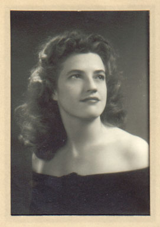
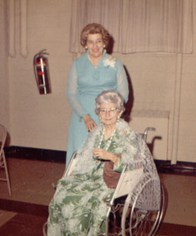

|
 |
Ruth Deward Curnick was born July 3rd, 1921 in Cambridge, Massachusetts. She traveled the country extensively as a child, and collected salt and pepper shakers. Ruth was an only child. She received her BA from Stetson and her Masters in Education from the University of Florida in 1949. Her Master's Thesis was on "Contemporary Developments in Education as Seen by the New York Times". |
| It was at the University of Florida that Ruth fell in love with an undergraduate student, Dick Gerber. They were married and together had two children, Beverly and Alan. Ruth died December 3rd, 1980. It was only then that her children discovered that she was somewhat older than she had led them to believe. |
 |